|
Introduction
This is an extremely high level tutorial. Before you start, make
sure you have learned basic TorqueScript syntax, T2D Editor Basics, and
behavior concepts. If you are completely new to Torque, specifically
T2D, I recommended you go through the other tutorials found in this
documentation first.
Making Our Fish Move
In this section we are introduced to behaviors in the process of
creating a movement behavior. We set this movement behavior up to take
key input to allow us to configure our movement keys inside the Level
Builder itself. First you want to create a new project. I named mine "MyFishTutorial".
Next, bring up the resources menu (Project->Resources...) and add the "fishArt" resource. Now you should have a fresh project with a set of fish images. We are
ready to begin making our quick, behavior based, fish game.
Fish Controls Behavior
For our fish game we need only three behaviors. Behaviors are
sets of scripts we can create and then assign to various object inside
the Level Builder. Not only can we assign them but we can configure
different values to customize the behavior.
We will need to create three different behaviors for this quick and simple game, as follows:
- Controls, for using the keys to control our player
- Our interactive objects, to allow them to add and subtract life from our player
- Life management, adding/subtracting life from our player as well as slowly draining life
Now that we know what we need, our next steps will be adding the
scripts for each of these and then testing them. We are going to add a
behavior that we want to show up in the Level Builder, so close down
T2D. Create a script file called "fishControls.cs" inside your Project
Directory/game/behaviors folder, using the following code:
if(!isObject(fishControlsBehavior))
{
%template = new BehaviorTemplate(fishControlsBehavior);
%template.friendlyName = "Fish Tutorial Controls";
%template.behaviorType = "Input";
%template.description = "Movement control for our Fish Tutorial";
%template.addBehaviorField(upKey, "Key to bind to upward movement", keybind, "Up");
%template.addBehaviorField(downKey, "Key to bind to downward movement", keybind, "Down");
%template.addBehaviorField(leftKey, "Key to bind to left movement", keybind, "Left");
%template.addBehaviorField(rightKey, "Key to bind to right movement", keybind, "Right");
%template.addBehaviorField(verticalSpeed, "Speed when moving vertically", float, 15.0);
%template.addBehaviorField(horizontalSpeed, "Speed when moving horizontally", float, 30.0);
}
function fishControlsBehavior::onBehaviorAdd(%this)
{
if (!isObject(moveMap))
return;
// bind our keys on the keyboard
moveMap.bindObj(getWord(%this.upKey, 0), getWord(%this.upKey, 1), "moveUp", %this);
moveMap.bindObj(getWord(%this.downKey, 0), getWord(%this.downKey, 1), "moveDown", %this);
moveMap.bindObj(getWord(%this.leftKey, 0), getWord(%this.leftKey, 1), "moveLeft", %this);
moveMap.bindObj(getWord(%this.rightKey, 0), getWord(%this.rightKey, 1), "moveRight", %this);
%this.up = 0; %this.down = 0; %this.left = 0; %this.right = 0;
}
function fishControlsBehavior::moveUp(%this, %val)
{
%this.up = %val;
%this.updateMovement();
}
function fishControlsBehavior::moveDown(%this, %val)
{
%this.down = %val;
%this.updateMovement();
}
function fishControlsBehavior::moveLeft(%this, %val)
{
%this.left = %val;
%this.updateMovement();
}
function fishControlsBehavior::moveRight(%this, %val)
{
%this.right = %val;
%this.updateMovement();
}
function fishControlsBehavior::updateMovement(%this)
{
// figure out what speed in what direction we are moving based on key input
%this.owner.setLinearVelocityX((%this.right - %this.left) * %this.horizontalSpeed);
%this.owner.setLinearVelocityY((%this.down - %this.up) * %this.verticalSpeed);
// check whether or not we need to flip our direction
if((%this.left != %this.right) && (%this.left != %this.owner.getFlipX()))
%this.owner.setFlipX(%this.left);
}
Testing Movement Behavior
The behavior you just created adds the ability to control the
object it is attached to. You will be able to choose which keys move
the object up, down, left, and right. It even allows you to add default
values for the behavior fields. Time to try it out. Re-open T2D and
load up your project again.
Click and drag in a fish you want to use as your player (be
sure to drag in an animation), resize it if necessary. Click the Edit
tab. You should see a behaviors roll out, click the drop-down and
select the "Fish Tutorial Controls" behavior, then click the add button
(the green plus).
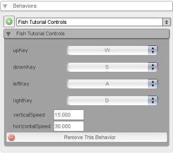
Now you should see the selected behavior listed with six
different properties. The first four properties are our various
keyboard settings for movement keys. Click the dropdown for each key
and set the key you want for each direction of movement. I am using the
typical W = up, S = down, A = left, D = right.
The last two properties are the horizontal and vertical
movement speeds. These should be safe at the default values though you
can tweak them however you want for your game. Time to test! Click the
play button and move your fish around. We have implemented our first
behavior for the Fish game, two more to go.
Giving Our Fish Health
Now that we have our fish moving, we need to add some gameplay elements. We are going to add three different elements:
- Health management to our fish, including losing and gaining health as well as slowly losing it over time
- Bubbles that give health
- Mines that damage health
To accomplish this we will create two more behaviors and then assign them in the Level Builder.
Fish Health Management Behavior
We are going to add some more behaviors that we want to show up
in the Level Builder, so close down T2D. Create a script file called
"fishHealthManagement.cs" inside your Project Directory/game/behaviors
folder, using the following code:
if(!isObject(fishHealthManagementBehavior))
{
%template = new BehaviorTemplate(fishHealthManagementBehavior);
%template.friendlyName = "Fish Tutorial Health Management";
%template.behaviorType = "Gameplay";
%template.description = "Health management for our Fish Tutorial";
%template.addBehaviorField(health, "The current health of the fish", float, 100);
%template.addBehaviorField(maxHealth, "The max health of the fish", float, 100);
%template.addBehaviorField(healthLossTime,
"The ammount of seconds the fish should lose health", float, 3.00);
%template.addBehaviorField(healthLossValue,
"The ammount of health the fish loses over time", float, -10);
}
function fishHealthManagementBehavior::onBehaviorAdd(%this)
{
// calculate the min health
%this.minHealth = %this.maxHealth * 0.20;
// set the max width and height to the starting width and height
%this.maxWidth = %this.owner.getWidth();
%this.maxHeight = %this.owner.getHeight();
// if we are to take damage we must receive collision
%this.owner.setCollisionActive(false, true);
// set a flag to signify that we have health
%this.owner.hasHealth = true;
%this.owner.enableUpdateCallback();
%this.lastSceneTime = 0;
}
function fishHealthManagementBehavior::updateHealth(%this, %modifier)
{
// modify our health based on the modifier
%this.health += %modifier;
// lets clamp the values between the min health and the max health
if(%this.health > %this.maxHealth)
{
%this.health = %this.maxHealth;
}
else if(%this.health < %this.minHealth)
{
%this.health = %this.minHealth;
}
// call the update size method
%this.updateSize();
}
function fishHealthManagementBehavior::updateSize(%this)
{
// get a multiplier based on current health out of max health
%healthMultiplier = %this.health / %this.maxHealth;
// calc the new sizes
%newWidth = %this.maxWidth * %healthMultiplier;
%newHeight = %this.maxHeight * %healthMultiplier;
// update the size on the owner of this behavior
%this.owner.setSize(%newWidth, %newHeight);
}
function fishHealthManagementBehavior::onUpdate(%this)
{
// grab the scene time and figure out how long its been since the last update
%sceneTime = %this.owner.scenegraph.getSceneTime();
%diff = %sceneTime - %this.lastSceneTime;
// if its been the specified loss time then let decrease the health
if(%diff >= %this.healthLossTime)
{
// update the Health with the loss value then store this time as the last time
%this.updateHealth(%this.healthLossValue);
%this.lastSceneTime = %sceneTime;
}
}
Modify Health Behavior
Create a script file called "modifyHealth.cs" inside your Project Directory/game/behaviors folder, using the following code:
if(!isObject(fishModifyHealthBehavior))
{
%template = new BehaviorTemplate(fishModifyHealthBehavior);
%template.friendlyName = "Fish Tutorial Modify Health";
%template.behaviorType = "Gameplay";
%template.description = "Modify health control for our Fish Tutorial";
%template.addBehaviorField(healthModifier,
"Value in which to modify the health by", integer, 2);
%template.addBehaviorField(minSpeed, "The min random speed to float down", float, 5);
%template.addBehaviorField(maxSpeed, "The max random speed to float down", float, 15);
}
function fishModifyHealthBehavior::onBehaviorAdd(%this)
{
// enable collision for sending and then enable the callback
%this.owner.collisionActiveSend = true;
%this.owner.collisionActiveReceive = false;
%this.owner.collisionCallback = true;
// disable physics
%this.owner.collisionPhysicsSend = false;
%this.owner.collisionPhysicsReceive = false;
// set the world limit
%this.owner.worldLimitMin = "-50 -45";
%this.owner.worldLimitMax = "50 45";
%this.owner.worldLimitMode = "NULL";
%this.owner.worldLimitCallback = true;
}
function fishModifyHealthBehavior::onAddToScene(%this, %scenegraph)
{
%this.startPositionY = %this.owner.getPositionY();
%this.respawn();
}
function fishModifyHealthBehavior::onCollision(%this, %dstObj, %srcRef, %dstRef, %time,
%normal, %contacts, %points)
{
// lets update the health of the object we are colliding with
if(%dstObj.hasHealth)
{
%dstObj.updateHealth(%this.healthModifier);
%this.respawn();
}
}
function fishModifyHealthBehavior::onWorldLimitt2dSceneObject::onWorldLimit(%this,
%limitMode, %limit)(%this, %mode, %limit)
{
switch$(%limit)
{
case "bottom":
%this.respawn();
}
}
function fishModifyHealthBehavior::respawn(%this)
{
%this.owner.setPositionY(%this.startPositionY);
%this.owner.setLinearVelocityY(getRandom(%this.minSpeed, %this.maxSpeed));
}
Healing the Player
Now that we have our two behaviors, time to use them!
Open up T2D and load up your project again. Drag in a bubble static sprite (should be the last frame in the 14
frame image) into the level just above the camera area (the camera area
is the outer blue box, resize the bubble if necessary.
Then click on the Edit Tab. Now add the "Fish Tutorial Modify Health"
behavior just like you added the fish control behavior (select it from
the drop down and click the plus button). Change the "healthModifier"
value to 10 (or another value of your choosing, keep in mind our fish
will default to 100 health).
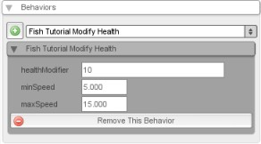
Harming the Player
Next, drag a mine static sprite into the level just above the
camera area, and a little to the side of your bubble. Then click on the
Edit Tab.
Add the "Fish Tutorial Modify Health" behavior just like you
added the fish control behavior (select it from the drop down and click
the plus button). Change the "healthModifier" value to -10 (this way it
will subtract life).
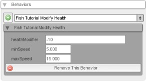
Adding Health and Final Testing
Our final step to is to select our player fish, click the Edit
Tab, and add the "Fish Tutorial Health Management" behavior. This
behavior has a few different properties that I will explain:
- health: this is the starting health
- maxHealth: The maximum health of the fish
- healthLossTime: The amount of seconds the fish will lose health
- healthLossValue: The amount of health the fish will lose at the interval of healthLossTime
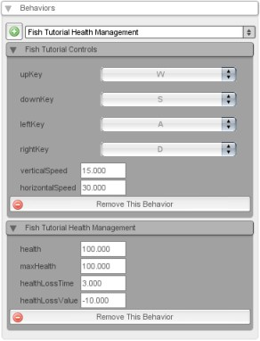
The default values should work fine, though feel free to tweak
to your delight. That is what T2D and behaviors are all about. When you
are ready, hit the play button. You should be able to swim around and
gather bubbles to increase in health and size and get hit by a mine to
decrease in health and size.
Adding Some Backgrounds
Now that our base gameplay is done we add some background images as
well as making minor changes to customize our fish game. There are
three layers of background images:
- Our water background
- First layer of rocks
- Second layer of rocks
To fully take advantage of these layers we need to layer our
fish and both our bubble and mine sprites properly. If we layer our
fish player properly we will get a great effect of our fish swimming
between the rocks. Keep in mind the lower number layers are in front.
The higher the layer number the further back it is. So layer 0 is all
the way up front, while layer 31 (there are 32 total layers) is the
furthest back.
Player Fish Layer: Set our player object to Layer 15
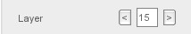
Bubble/Mine Layer: Set our mine and bubble objects to Layer 14
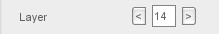
Background Layer: Add the background image, and set it to Layer 31
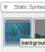 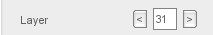
Far Rocks Layer: Add the rocksfarimage sprite, and set it to Layer 30
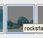 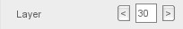
Near Rocks Layer: Add the rocksnearimage sprite, and set it to Layer 12
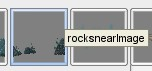 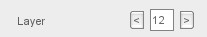
Now if you play your level you should be able to swim your
fish between the rocks. The bubbles and mines should also layer
properly now as well. Now comes the fun part, you can take what we have
done and customize the game. Here are various ways to customize the
game:
- Create a behavior that spawns multiple bubbles and mines that fall to the bottom
- Resize the backgrounds to fit in the level better, or even much larger to make the world seem bigger
- Change the values of any of the behaviors to change the game play experience, such as:
- Giving the fish much more life
- Making the bubbles give much more life and duplicate the mines so there are lots of mines and very few bubbles
- Change the player speed to make it move around faster or slower
- Increase or decrease the min and max speeds for the bubbles or mines
- Create a new behavior to have other fish swim back and forth
- Decorate the background with various other sprites and/or other effect
Conclusion
The focus of this tutorial was not to complete a fully polished
product, but to show how quickly you can prototype a game using
Behaviors, T2D's Editors, and the Resource Manager. There are other
tutorials, such as the non-behavior Fish Game and Fish Demo, which you
can use to add on to this sample game.
|